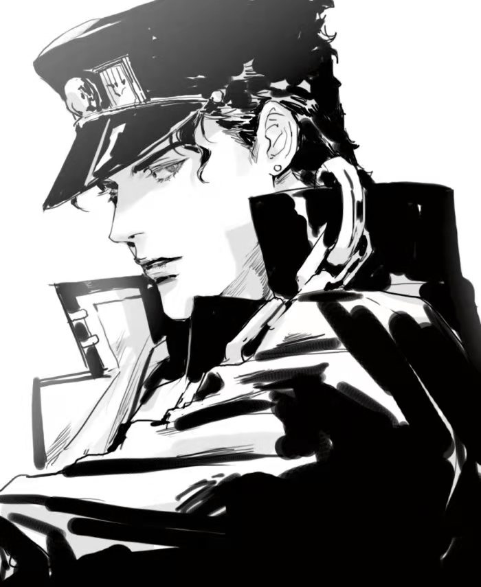

还记得今天是什么日子嘛？！
很遗憾这该死的疫情还没有结束，今天你可能收不到礼物吃不到蛋糕。
不过我相信很快就会过去了！对了有个男人拜托我给你送了样东西
叫什么空条什么的来着，喏，就是这个人
这是他送的包裹，请注意查收哦

从此刻开始一场奇妙的冒险开始了
这一天，故事短暂的落下了帷幕
那个同骑士般正直的赤诚青年
高唱着赞歌赴死的英国绅士
学法学到人间失格的吸血鬼
骑士、僧侣、解说、面包
一切的恩怨都随着轮船沉入大海
“人类的赞歌就是勇气的赞歌”
他们的故事仍在传唱
你是这年听到的嘛？
尘封了千年的大门再次打开
曾经的朝圣者坠入了执念的地狱
沉睡了史前生物们渐渐苏醒
战斗的潮流将再次涌起
乔纳森与齐贝林的再次相遇
齐贝林之魂孕育着黄金精神
最后的波纹带去了挚友的新生
结束了这场战斗的纷争
“你还有办法打倒这样的怪物吗？jojo”
“恩，有的，还剩仅有的最后一招！”
“你给路达呦~~~史摩基~”
“我德意志的科学技术世界第一！！！！！！！”
“我最后要展示出的，是代代相传的，寄希望于未来的齐贝林之魂！”
“这是我最后的波纹了！JOJO！”
这是用他的血造成的水泡吗？
看它没有破，想必凝聚了他最后的波纹
为了同伴，为了把这个东西留下，才没有用最后的波纹攻击我么吗？
就给你吧
并非我变得像人类一样多愁善感
只是对我来说
强大的战士才是真理
勇者才是朋友，是尊敬的对象
我会把你永远留在我记忆一角，西撒
如同泡沫般幻灭的男人啊
为了家人、朋友，一场周游世界的旅途开始了
“乔斯达家百年的恩怨将在此划上句号”
这一年，你应该认识了很多同好吧？
“乔斯达家有一项代代相传的打法，那就是...你给路达呦~！”
“吾名为「简·皮耶尔·波鲁那雷夫」，为了吾妹的名誉，为吾友阿布德尔的安宁，J·凯尔，我一定要把你打入绝望的深渊！”
“吾名花京院典明，为吾友阿布德尔雪耻，为身畔吾友波鲁那雷夫之妹之安息——我要你以死谢罪！”
“如果你在这房子里失踪或者受伤了，我是不会去救你的，波鲁纳雷夫，伊奇危险啊！！！”
“接招吧Dio，半径20米的绿宝石水花！”
“汪汪~”
这一年，你18了
虽然没有觉醒替身
却也获得了命运的石鬼面
此时距离高考还有154天
终于要说再见了
书上说天下没有不散的筵席，书上也说人生何处不相逢
在那个蝉鸣不止的夏天，我安静的回头同那晚霞说了声再见。
后来我见过的所有晚霞，都没有晚自习的晚霞那么美
一切未知，我们断了联系，可故事还得继续
这期间，不良学生谋杀了平静上班族
黑社会小弟为上位怒殴了大老板
越狱成功的少女，为了父亲又回到了监狱
而JOJO们的故事也还在继续
那么，你的呢？
生日快.......
生日是谁？他快不快乐有什么要紧的
在这个世界上，我只希望你是快乐的
不止是生日
往后的日子也请继续闪闪发光
无论多大，都要永远热爱童话、英雄与魔法，对了还有替身使者
做好准备，扬帆起航了！
2022，全塘，去冰！